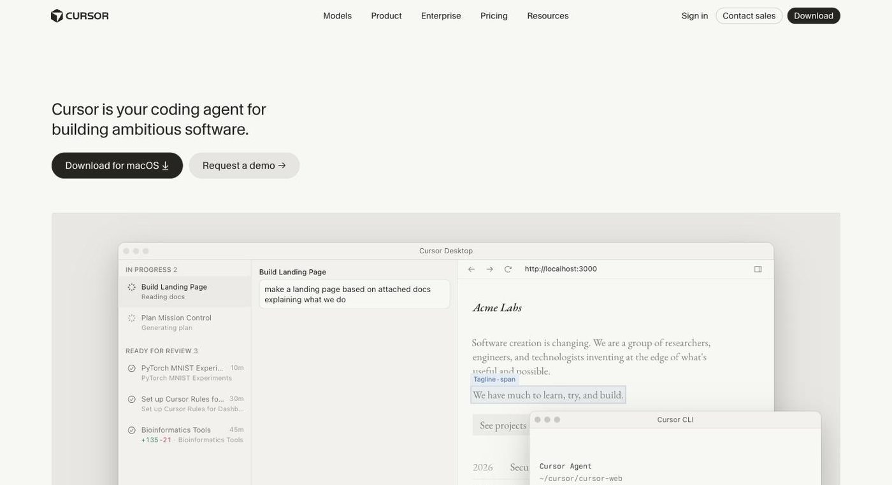

Cursor
Agentic AI coding editor, now owned by SpaceX and sold via The X Subscription

- Category
- Coding & Development
- Pricing
- New customers: The X Subscription - Free ($0), Plus $8/mo, Premium $30/mo, Super $100/mo, Ultra $200/mo; Teams from $30/user/mo. Existing Pro/Teams subscribers can keep their old plans. Check the official pricing page.
- Best for
- Good for developers and teams who want autonomous multi-file agents and model choice, and who will monitor usage.
- Official site
- cursor.com
- Last checked
- 2026-10-15
Cursor is a strong choice for developers who want an editor built around coding agents, and who can live with variable costs when using Claude or GPT models. Skip it if you want predictable flat pricing, don't want to be tied to the X and Grok ecosystem, or only need light inline completions.
It is a VS Code-based editor from Anysphere, whose site now says Cursor is part of SpaceX (announced August 14, 2026). It offers a desktop app, CLI, cloud agents and Slack and GitHub integrations, with models from OpenAI, Anthropic, Google, SpaceXAI and Cursor. On October 12, 2026 new customers were moved to The X Subscription, a bundle of Grok, Cursor and X Premium tiers; existing Pro and Teams subscribers are not moved automatically.
Good for developers and teams who want autonomous multi-file agents and model choice, and who will monitor usage. Not for people who want one flat monthly price covering Claude and GPT, anyone avoiding the X/Grok bundle, or teams that need long-term pricing certainty while terms are in flux.
Key features
Coding agents
Local and cloud agents that read your codebase, edit files and run tasks; cloud agents and automations appear in Premium and above on the new plans.
Tab completion
Predicts multi-line next edits as you type.
Multi-model access
The site lists models from OpenAI, Anthropic, Gemini, SpaceXAI and Cursor. Grok usage draws from the plan pool; third-party models bill at API list price.
CLI and integrations
A command-line agent plus Slack and GitHub integrations.
AI code review
Premium tier lists code hosting and AI code reviews.
Team and enterprise controls
Teams add centralized billing, usage analytics, privacy settings and SAML/OIDC SSO; Enterprise adds SCIM, audit logs, service accounts and access controls.
Pricing breakdown
Free
- Limited agent and chat requests
- Starter Cursor allowance
Plus
- Baseline shared usage pool
- Grok models only; third-party models not included
Premium
- 4x Plus usage
- Latest Grok models
- Cloud agents and automations
- Code hosting and AI code reviews
- Third-party models (Claude, GPT) at API list price
Super
- 15x Plus usage
- Everything in Premium
- Priority model access at peak times
Ultra
- 50x Plus usage
- Everything in Super
- Earliest access to new products and models
Teams
- Usage 4x to 50x Plus per seat
- Centralized billing, usage analytics, SAML/OIDC SSO
- Team-wide privacy settings
Enterprise
- Pooled usage
- SCIM, audit logs, service accounts
- Repo, model and MCP access controls
Pros and cons
Pros
- Built around agents rather than adding them to a completion tool
- VS Code base means existing habits and extensions largely carry over
- Model choice across several providers in one editor
- A free tier lets you test the agents before paying
- Existing Pro and Teams subscribers keep their plan and price unless they choose to switch
Cons
- New plans are a bundle with Grok and X Premium features; you pay for a package, not just an editor
- On the new plans, Claude and GPT usage bills at API list price from the first request, so costs vary with usage
- Limits are expressed as multiples of Plus, so it is hard to translate them into requests
- Switching from an old plan to the new one is permanent and cannot be reversed by support, per reporting on the forum announcement
- Plus does not include third-party models
- Recent ownership change (SpaceX) and plan overhaul mean terms may shift again; the pricing page shows monthly prices only
Alternatives to Cursor
GitHub Copilot
More predictable subscription pricing and works inside the IDE you already use.
Compare →Windsurf
Another agentic IDE if you want an editor-style alternative without the X/Grok bundle.
Compare →Claude Code
Terminal-based agent if you prefer Claude models and don't need a new editor.
Compare →Frequently asked questions
How much does Cursor cost now?
New customers buy through The X Subscription: Free, Plus $8/mo, Premium $30/mo, Super $100/mo, Ultra $200/mo, with Teams from $30/user/mo. Check the official pricing page, since the change is only days old.
What happens if I already have Cursor Pro?
Per the X announcement, nothing changes automatically; you can keep your current plan, price and features, or switch from billing settings with a prorated refund.
Is Cursor free?
There is a Free tier with limited agent requests and a starter allowance. Whether the old Hobby limits still apply was not stated; check the pricing page.
Are Claude and GPT models included?
No. On Premium and above you can use them, but they bill at API list price, optionally with a spending cap. Plus supports Grok models only.
What are good alternatives?
GitHub Copilot, Windsurf and Claude Code are the closest peers; Copilot is simpler to budget, while Claude Code is terminal-based.
Ready to try Cursor?
Head to the official site to explore pricing and start a free trial where available.
Visit Cursor →